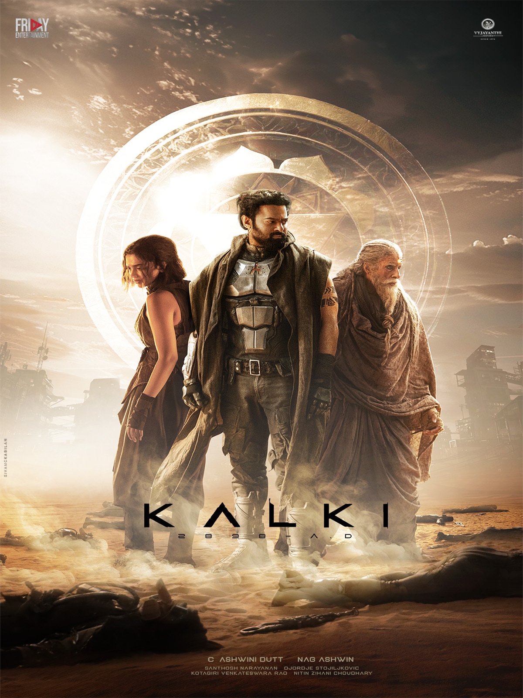
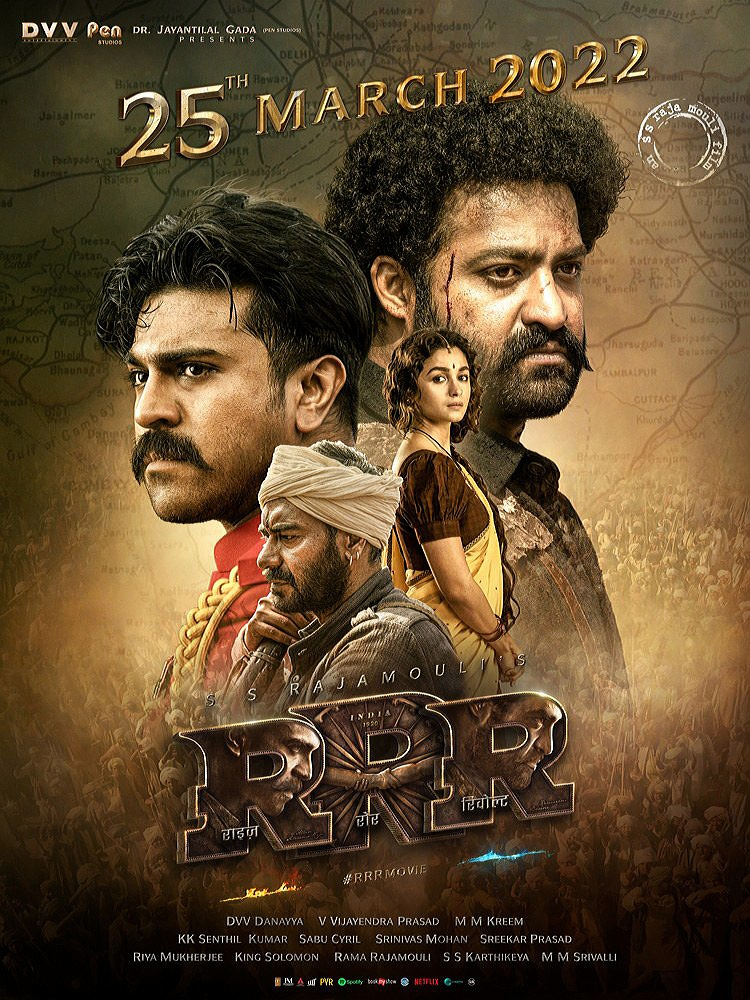
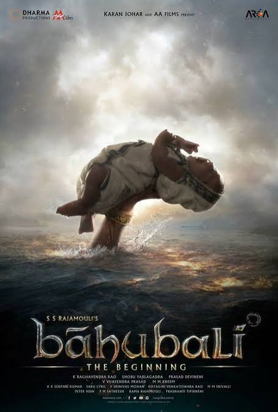
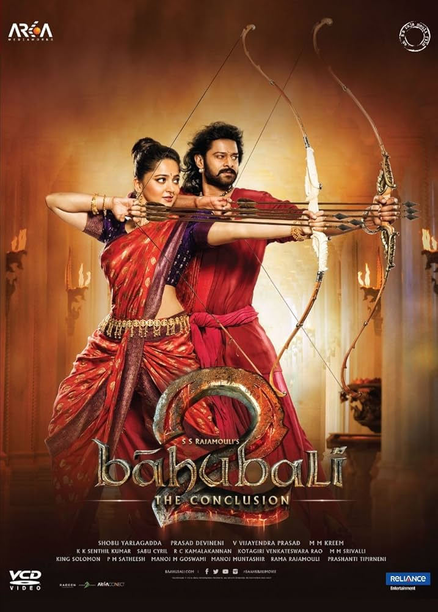
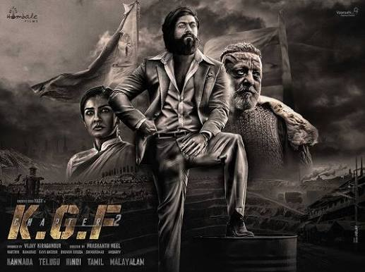

Watch, Review and Rate Movies!

Genre : Sci-Fi | Action
Cast : Prabhas,Amitabh Bachchan,Kamal Haasan,Padukone,Disha Patani,Keerthy Suresh...
Review: Kalki 2898 AD combines Indian mythology with futuristic science fiction. The visuals, action scenes, and world-building are impressive.
Rate :⭐9.5/10
Movie Synopsis :Kalki 2898 AD tells the story of Bhairava, Ashwatthama, and Sumathi brin a futuristic world. Their journey combines Indian mythology, science fiction, action, and hope for humanity.

Genre : Action | Period Drama | Historical Fiction | Epic Adventure
Cast : N. T. Rama Rao Jr,Ram Charan,Ajay Devgn,Alia Bhatt,Olivia Morris,Shriya Saran...
Review: RRR delivers powerful action, emotional storytelling, and outstanding performances by Jr NTR and Ram Charan. The music and climax are unforgettable.
Rate :⭐9.7/10
Movie Synopsis : RRR follows two legendary revolutionaries, Komaram Bheem and Alluri Sitarama Raju, whose friendship, courage, and sacrifice unite them against British colonial rule in India.

Genre : Action | Fantasy | Epic Drama
Cast : Prabhas, Rana Daggubati, Anushka Shetty, Tamannaah Bhatia, Ramya Krishnan...
Review: Baahubali impresses with its grand kingdom, spectacular battles, emotional story, and powerful characters. The sequel delivers an epic conclusion.
Rate : ⭐9/10
Movie Synopsis : Shivudu discovers his royal heritage and uncovers the secrets of the Mahishmati kingdom while fighting against injustice.

Genre : Action | Fantasy | Epic Drama
Cast : Prabhas,Anushka Shetty,Tamannah,Rana Daggubati,SathyaRaj...
Review:Baahubali 2: The Conclusion is a grand visual extravaganza that answers the big mystery while delivering massive, high-octane action and emotional drama.
Rate : ⭐9.9/10
Movie Synopsis : Pushpa Raj rises through the red sandalwood smuggling business and faces powerful enemies while fighting for his position.

Genre : Action | Crime | Thriller | Drama
Cast : Yash, Sanjay Dutt, Srinidhi Shetty, Raveena Tandon, Prakash Raj...
Review: KGF: Chapter 2 stands out for Yash's commanding performance, intense background music, stylish action sequences, and Rocky's rise to power.
Rate : ⭐8.2/10
Movie Synopsis : Rocky rises to power in the Kolar Gold Fields and faces powerful enemies while fighting to protect his empire against Adheera and Ramika Sen.